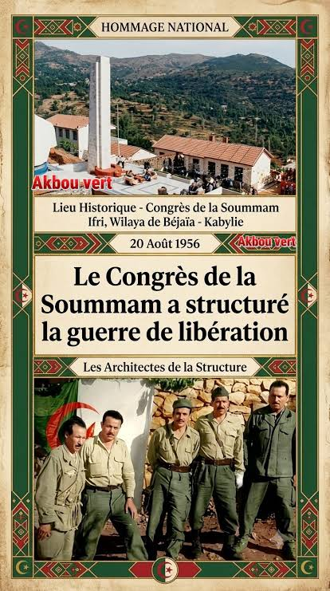

Nous nous souvenons
Les livres vieillissent.
Les photographies jaunissent.
Les monuments se couvrent
de pluie.
Mais certaines histoires
refusent de mourir.
Elles passent
de bouche en bouche,
de génération en génération,
comme une petite flamme
protégée par les mains.
Nous nous souvenons
des guerres
pour comprendre la paix.
Des frontières
pour comprendre les peuples.
Des morts
pour comprendre
ce que signifie vivre.
L'histoire n'est pas derrière nous.
Elle marche à côté.
Elle habite
les discours,
les silences,
les places,
les familles.
Alors souvenons-nous
sans transformer la mémoire
en haine.
Souvenons-nous
pour que les blessures
ne deviennent pas
des armes.
Car un peuple qui oublie
peut répéter.
Mais un peuple qui se souvient
peut choisir autrement.
Djamel Metref
At Yenni le 20 Août 2026
(70 ème anniversaire du congrès de la Soummam : 20 Août 1956)
← Tous les poèmes
Nous nous souvenons
Mémoire et transmission · Histoire et paix